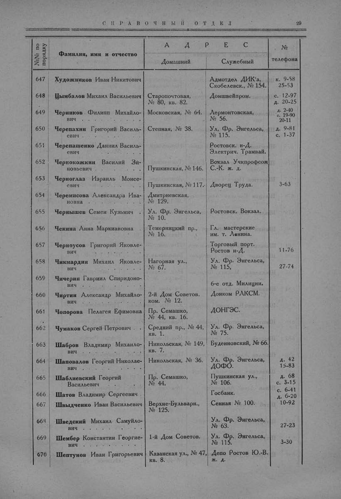

Лист источника 77
Скан

Распознанный текст
СПРАВОЧНЫЙ ОТДЕЛ 29
№№ по
порядку Фамилия, имя и отчество АДРЕС №
телефона
Домашний Служебный
647 Художников Иван Никитович Адмотдел ДИК'а, Скобелевск., № 154. к. 9-58 25-53
648 Цымбалов Михаил Васильевич Старопочтовая, № 80, кв. 82. Доншвейпром. с. 12-97 д. 20-25
649 Черников Филипп Михайлович Московская, № 64. Лермонтовская, № 56. д. 2-40 с. 19-90 20-11
650 Черепахин Григорий Васильевич Степная, № 38. Ул. Фр. Энгельса, № 115. д. 9-81 с. 1-37
651 Черепашенко Даниил Васильевич Ростовск. н-Д. Электрич. Трамвай.
652 Чернокожкин Василий Зиновьевич Пушкинская, № 146. Вокзал Учкпрофсож С.-К. ж. д.
653 Черноглаз Израиль Моисеевич Пушкинская, № 117. Дворец Труда. 3-63
654 Черемисова Александра Ивановна Дмитриевская, № 129.
655 Чернышев Семен Кузьмич Ул. Фр. Энгельса, № 10. Ростовск. Вокзал.
656 Чекина Анна Маркиановна Темерницкий пр., № 16. Гл. мастерские им. т. Ленина.
657 Черноусов Григорий Яковлевич Торговый порт. Ростов н-Д. 11-76
658 Чикмардин Михаил Яковлевич Нагорная ул., № 67. Ул. Фр. Энгельса, № 115. 27-74
659 Чичерин Гавриил Спиридонович 6-е отд. Милиции.
660 Чиртин Александр Михайлович 2-й Дом Советов. ком. № 12. Донком РЛКСМ.
661 Чопорова Пелагея Ефимовна Пр. Семашко, № 44, кв. 16. ДОНГЭС.
662 Чумаков Сергей Петрович Средний пр., № 44, кв. 1. Ул. Фр. Энгельса, № 75.
663 Шабров Владимир Михайлович Никольская, № 149, кв. 7. Буденновский, № 66.
664 Шаповалов Георгий Николаевич Никольская, № 36. Ул. Фр. Энгельса, ДОФО. д. 42 15-83
665 Шаблиевский Георгий Васильевич Пр. Семашко, № 44. Пушкинская ул., № 106. д. 68 с. 3-15
666 Шатов Владимир Сергеевич Госбанк. с. 6-41 д. 6-20
667 Швыдченко Иван Васильевич Верхне-Бульварн., № 125. Сенная № 100. 10-92
668 Шведский Михаил Самуйлович Ул. Фр. Энгельса, № 63. 27-23
669 Шембер Константин Георгиевич 1-й Дом Советов. Ул. Фр. Энгельса, № 115. 3-30
670 Шептунов Иван Григорьевич Казанская ул., № 47, кв. 8. Депо Ростов Ю.-В. ж. д.